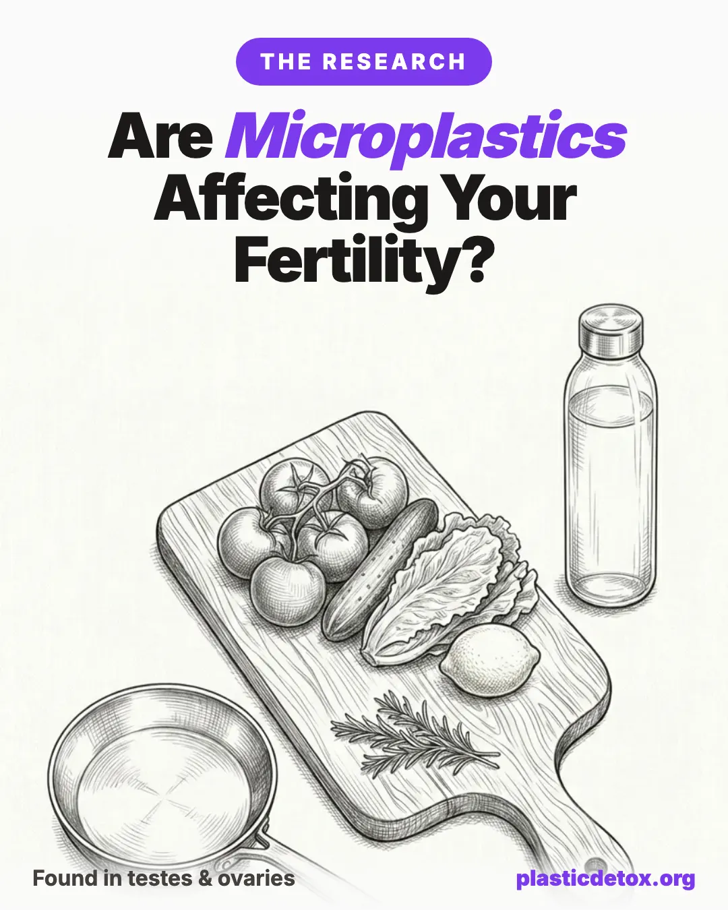

Are Microplastics Affecting Your Fertility? What the Research Actually Shows

The 30 Second Summary
- The particles are real, the harm is not yet proven. Microplastics have been found in human testes, semen, ovarian follicular fluid, placentas, and breast milk. That is detection, not proof of harm. Every human fertility study so far is correlational and small.
- The chemistry is the stronger story. The additives in plastic (phthalates, BPA, BPS, PFAS) have older and more robust fertility evidence than the particles themselves. When you cut plastic, you cut both at once.
- Four changes cover most of your exposure: stop heating and storing food in plastic, replace nonstick cookware, filter your water and drink from glass or steel, and go fragrance free.
- Both partners, three to six months out. Sperm take about 72 to 90 days to mature and oocytes about 90 days, so the preconception window is when changes actually compound.
- Skip the gimmicks. No detox, cleanse, supplement, or blood test removes or reliably measures microplastics. Spend the effort on reducing intake instead.
- Two swaps that punch above their weight: a Bluevua countertop reverse osmosis filter for your drinking water and a Lodge cast iron skillet to retire the nonstick pan.
Microplastics have now been found in human testes, ovarian follicular fluid, semen, placentas, and breast milk. That sounds alarming, and the headlines have treated it that way. So let us be clear from the first sentence: finding a particle somewhere is not the same as proving it does damage there. This article is not going to tell you that microplastics cause infertility, because the research does not support that claim.
What the research does support is more measured and, we think, more useful. There is now enough evidence to take exposure seriously. And here is the part most coverage misses: the action items in this guide are worth doing for well documented reasons that have nothing to do with the particle research. Reducing plastic almost always means reducing exposure to phthalates, BPA, and PFAS, three classes of chemicals with a long and solid track record of harming reproductive health. So even if the microplastic particle research is eventually walked back, the steps below still pay off. Read the whole thing with that framing in mind.
This is general information, not medical advice. If you are struggling to conceive, the most important step is to work with a reproductive endocrinologist. Think of everything here as the controllable, low regret layer that sits underneath good medical care.
1. The State of the Evidence in 2026
Five years ago, the question of whether microplastics had reached the human reproductive system was open. It is now closed. Between 2023 and 2026, research groups on three continents reported microplastic particles in essentially every reproductive tissue and fluid they looked at. The map below summarizes where the particles have turned up.
That last line under the diagram is the whole game. There is a meaningful difference between three claims that often get blurred together in coverage:
- Microplastics are present in reproductive tissue. This is now well established and not seriously disputed.
- Microplastics are associated with worse fertility markers. This has some support in small studies, but the studies are correlational and cannot rule out other explanations.
- Microplastics cause infertility. This has not been demonstrated in humans and may never be demonstrable with the kind of certainty people want.
Keeping those three claims separate is the single most important skill for reading this topic without being either scared or dismissive. The sections that follow walk through what each strand of research actually found, study by study, so you can see exactly where on that ladder each finding sits.
2. Male Fertility: The Testicular and Semen Studies
Male fertility has produced the most attention grabbing findings, partly because semen and testicular tissue are easier to sample and study than ovaries. Here is what the major studies actually reported.
The University of New Mexico study (2024)
Published in Toxicological Sciences, the UNM team led by Yu and colleagues found microplastics in 100 percent of the human testicular samples they examined, at an average concentration of about 329 micrograms per gram of tissue. Polyethylene, the plastic in bags and bottles, was the most abundant polymer. In the companion canine samples, higher levels of PVC correlated with reduced sperm count. The dog data is suggestive of a dose relationship, but it is dog data, and the human portion of the study measured presence, not function.
The Beijing study (2023)
An earlier Chinese study detected microplastics in six human testes and across thirty semen samples, making it one of the first to show particles in both the tissue and the fluid it produces. Small numbers, but an important early confirmation.
The 2025 ESHRE conference report
At the 2025 meeting of the European Society of Human Reproduction and Embryology, Gomez Sanchez and colleagues reported microplastics in more than half of the semen fluid samples they examined. The most frequently detected polymer was PTFE, the nonstick compound better known as Teflon. PTFE also turned out to be the most common polymer in the female samples in the same body of work, which is one reason the cookware section later in this guide deserves real attention.
The 2025 Human Reproduction meta analysis
A meta analysis pulling together fifteen studies covering roughly 1,200 patients found microplastics in 68 percent of testicular tissue samples. The eye catching number was a difference in sperm count: patients with detectable microplastics averaged about 12 million sperm per milliliter, compared with about 26 million per milliliter in those without. That is a large gap, and it is the closest thing the field has to a human signal that particles track with worse outcomes.
It is also exactly the kind of finding that demands caution. Men with detectable microplastics may differ from men without them in many ways: age, body weight, diet, occupation, smoking, and overall environmental exposure. Any of those could drive both the particle load and the sperm count. The correlation is real and worth taking seriously. It is not the same as the particles being the cause.
What to actually do with the male fertility research
The practical takeaway is not to panic over a sperm count. It is that the male side of the ledger is roughly as developed as the female side, which means the changes in this guide are for both partners, not just the woman. Men have historically been an afterthought in fertility conversations. The biology does not justify that. Action item: if you are a man planning to conceive in the next year, the food, water, and cookware swaps below are your job too, starting about three months out.
3. Female Fertility: The Ovarian and Follicular Fluid Findings
The female reproductive system is harder to sample, so the research arrived a little later, but 2025 was a turning point.
The Montano study (2025)
Published in Ecotoxicology and Environmental Safety, the Montano group reported the first detection of microplastics in human ovarian follicular fluid, the fluid that surrounds and nourishes a developing egg. Particles were found in 14 of 18 samples, at an average of about 2,191 particles per milliliter. Critically, the study found a significant correlation between microplastic levels and FSH, follicle stimulating hormone, a hormone central to egg development. A correlation with a reproductive hormone is more biologically interesting than mere presence, because it hints at a possible functional relationship rather than a particle simply sitting there inertly.
The 2025 ESHRE follicular fluid data
The same Gomez Sanchez work presented at ESHRE 2025 found microplastics in 69 percent of follicular fluid samples, again with PTFE the most frequently detected polymer in both male and female samples. The consistency of PTFE across the sexes is a recurring theme worth noting.
The Ni study and the laboratory work (2025 to 2026)
Beyond detection, researchers have started asking what particles do once they are present. Ni and colleagues, also in Ecotoxicology and Environmental Safety, characterized microplastics in human follicular fluid and then tested their effect on mouse oocyte maturation in a dish. A 2026 review in the International Journal of Gynecology and Obstetrics by Raghuvir and colleagues summarized laboratory evidence that the smallest particles, around 50 nanometers of polyethylene, can penetrate the zona pellucida, the protective shell around an egg, and enter the oocyte itself in lab conditions.
This is important and also easy to overstate. Laboratory and animal studies use concentrations and conditions chosen to detect an effect, not to mimic real human exposure. They establish that an effect is biologically possible. They do not establish that it happens at the doses real people encounter. That is the gap the field has not yet crossed.
The endometriosis connection
An April 2025 urine study found PTFE overrepresented in endometriosis patients, present in about 59 percent, against a pattern dominated by polyethylene in healthy controls. This matters for fertility specifically because endometriosis is found in 25 to 50 percent of women evaluated for infertility. The study cannot say whether PTFE contributes to endometriosis or simply tracks with it, but it is another thread tying a specific polymer to reproductive conditions.
Most microplastic studies stop at counting particles. The Montano follicular fluid study went one step further and found that particle levels correlated with FSH, a hormone that directly governs egg development and that fertility clinics measure constantly.
That does not prove the particles changed the hormone. FSH could be high for unrelated reasons in the same women who happen to carry more particles. But a correlation with a functional hormone is a more serious signal than presence alone, and it is the kind of result that, if it replicates in larger studies, would move microplastics up the ladder from present to plausibly harmful.
4. Pregnancy, Placenta, and Breast Milk
The fertility question does not end at conception. Several of the most cited microplastic findings concern pregnancy and the newborn period.
Placenta. Since the first report in 2021, multiple studies have detected microplastics in human placentas, including on both the fetal and maternal sides of the organ. A 2024 analysis reported finding microplastics in every placenta it tested. The placenta is the interface between mother and fetus, so particles there raise reasonable questions about fetal exposure during the most vulnerable window of development.
Breast milk. A 2024 study from the University of Texas at El Paso found that nanoplastics and PFAS together can alter proteins in breast milk in ways that may affect infant immune development. This is mechanistic, early stage work, but it points at the same recurring pattern: the particles rarely travel alone, and the chemistry that accompanies them is where the documented harms cluster.
The proposed mechanism. A 2026 review in the International Journal of Molecular Sciences synthesized the cross organ evidence and pointed to oxidative stress as the leading proposed mechanism by which microplastics could plausibly cause harm across body systems, including reproductive tissue. Oxidative stress is a well understood pathway in reproductive biology, which makes it a credible candidate. Credible mechanism is not the same as demonstrated effect, but it is a reason the hypothesis is taken seriously rather than dismissed.
If you are already pregnant, the relevant action items shift slightly, and we cover them in section 14. For deeper, room by room guidance on the newborn period, our non toxic baby and toddler products guide and our breakdown of microplastics in baby food go further than we can here.
5. The Particles Are One Story. The Additives Are Another.
Here is the part of the conversation that gets lost in the headlines about particles in testes, and it is the part that actually justifies taking action today.
Plastic is not just polymer. To turn raw resin into a soft phone case, a flexible food wrap, a water resistant jacket, or a grease proof takeout box, manufacturers add a long list of chemicals: plasticizers, stabilizers, flame retardants, and coatings. The most reproductively relevant of these are phthalates, BPA and its cousin BPS, and PFAS. And unlike the microplastic particles, these chemicals have decades of fertility research behind them.
Phthalates
Phthalates make plastic soft and flexible and are common in fragrance, vinyl, food packaging, and many personal care products. The human evidence links phthalate exposure to reduced sperm quality, altered testosterone and other hormone levels, and, in the prenatal window, to changes in male reproductive development. This is among the most studied endocrine disrupting chemical classes in existence. Our deep dive on how to avoid BPA and phthalates covers the specifics.
BPA and BPS
Bisphenol A is the building block of polycarbonate plastic and the lining of many cans. It is a well characterized endocrine disruptor, and human studies have linked higher BPA exposure to reduced success rates in IVF, among other reproductive effects. The catch with BPA is that the BPS and BPF compounds marketed as replacements appear to behave similarly, which is why a BPA free label is not the reassurance it sounds like. We unpack that trap in why BPA free is not safe.
PFAS
PFAS, the per and polyfluoroalkyl substances used for grease and water resistance, are the so called forever chemicals. Human studies associate PFAS exposure with longer time to conception, reduced fecundity, and reduced sperm quality. PFAS also happen to be the chemistry behind nonstick coatings and stain resistant and water resistant fabric treatments, which is why those two categories show up repeatedly in the exposure sections below.
6. How to Read This Research
Before we move to action items, it is worth slowing down on methodology, because the limitations are real and you should understand them rather than have them glossed over.
| Limitation | What it means | Why it matters |
|---|---|---|
| Correlational, not causal | Studies observe particles and outcomes together, without controlled exposure | Something else could drive both the particle load and the outcome |
| Small samples | Most human studies have fewer than 50 participants | |
| Contamination risk | Plastic is everywhere in a lab, including in sampling equipment | Some detected particles may come from the process, not the body |
| No dose response | We cannot yet say how much exposure produces how much risk |
None of these limitations means the research is worthless. Detection is robust and reproducible across many independent labs, and the contamination problem is well recognized, which means good studies now run rigorous controls to account for it. What the limitations mean is that you should resist both of the easy stories: the scary one that says microplastics are sterilizing humanity, and the dismissive one that says it is all hype. The accurate story is in between and a little less satisfying.
With that settled, the rest of this guide is practical. We rank exposure channels roughly by how much they contribute and how strong the evidence is, starting with the biggest: what you eat and drink.
7. Exposure: Food and Drink (The Biggest Routes)
For most people, ingestion is the largest single source of microplastic and additive exposure, which makes the kitchen the highest leverage place to start.
Bottled water and beverages
In a 2025 analysis in Science of the Total Environment covering 155 beverage samples, every single sample contained microplastics. A separate 2024 study using a new imaging technique estimated that bottled water carries on the order of 240,000 plastic particles per liter, the large majority of them nanoplastics small enough to cross biological barriers. Heat, carbonation, and acidity all drove higher particle counts, which means a warm soda that has sat in a hot car is close to a worst case.
Action items:
- Switch to filtered tap water at home. A carbon block or reverse osmosis filter meaningfully reduces microplastic load. See our full water filtration guide.
- Drink from glass or stainless steel reusable bottles rather than plastic.
- Skip plastic bottled beverages, and especially avoid them warm or carbonated.
The filter you want depends on your kitchen and budget. The three below are the picks from our store, one for every setup, from a no install pitcher to a whole household under sink system. All three are tested to remove microplastics, and the two reverse osmosis units remove PFAS as well.

Clearly Filtered Pitcher
Pitcher style, no install. NSF tested to standards 42, 53, 401, and 473. Removes microplastics, PFAS, and lead. Tritan housing, filter lasts about 4 months.
View →
Bluevua RO100ROPOT Countertop RO
Five stage countertop reverse osmosis with remineralization. No plumbing or faucet adapter, fill the tank by hand. 99.9% removal of microplastics and PFAS.
View →
APEC Reverse Osmosis System
Five stage under sink reverse osmosis, NSF certified, with a steel pressure tank. 99.9% removal of microplastics and PFAS, sized for a whole household.
View →Heated plastic and food packaging
Heat is the single biggest accelerant of plastic shedding and chemical migration. Microwaving food in plastic, eating hot takeout straight from its plastic container, and pouring hot liquid into plastic all sharply increase what ends up in the food. One widely cited study estimated that microwaving a plastic container could release millions to billions of particles into the food in a few minutes.
Action items:
- Never microwave food in plastic. Use a glass bowl with a plate or glass lid on top.
- Transfer hot takeout to a ceramic or glass dish before eating, rather than eating from the plastic clamshell.
- Choose glass jarred or paper wrapped foods over plastic where you have the option. Our guide to plastic free food storage covers the best glass and steel options.
The easiest reheating swap is a set of glass containers so leftovers go from fridge to microwave to table without ever touching plastic. Both store picks below are borosilicate glass.

Glass Containers with Bamboo Lids (4 Pack)
Borosilicate glass with bamboo lids. Oven and microwave safe (remove lid). Four varied sizes. Lids double as small boards.
View →
Urban Green Glass Containers, Glass Lids (3 Pack)
Borosilicate glass with glass lids, so nothing but glass touches food. Microwave safe with lid on, dishwasher safe.
View →Seafood and salt
Both seafood and sea salt carry documented microplastic content, since both come from increasingly contaminated oceans. Shellfish are eaten whole, including the digestive tract, which is why they tend to test higher than fish you fillet.
Action items: favor variety over volume rather than cutting seafood out, which carries its own fertility benefits from omega 3 fats. Be a little more moderate with shellfish specifically. For salt, do not assume any type is a clean fix. Sea salt concentrates ocean microplastics, but mined and pink salts are not a reliable swap, since some testing finds them just as high and they carry trace heavy metals like lead and arsenic. Salt is a minor exposure route here, so put your effort into water and food storage instead.
Tea bags
This one surprises people. Most plastic and silken pyramid tea bags, and even many paper bags sealed with a polypropylene coating, shed billions of micro and nanoplastic particles into a single cup at brewing temperature. You are steeping plastic in hot water by design.
Action items: switch to loose leaf tea brewed with a stainless steel infuser, or use paper only bags confirmed plastic free with the manufacturer. For bagged convenience, Traditional Medicinals uses unbleached paper bags with no plastic sealant and Pukka Herbs uses plant based compostable bags. For loose leaf, Rishi Tea sells organic varieties in recyclable tins. Our dedicated guide on avoiding microplastics in tea goes deeper.
8. Exposure: Cookware and Food Contact Surfaces
Recall that PTFE was the polymer most frequently detected in both the male and female fertility samples. PTFE is Teflon. That does not prove your frying pan is the source, but it is a striking enough overlap to make cookware a sensible priority.
Nonstick (PTFE and Teflon) cookware
As nonstick coatings age, scratch, and overheat, they shed PTFE particles and can release PFAS, the forever chemicals with documented fertility effects. A worn nonstick pan is the clearest everyday source of the exact chemistry the research keeps flagging. This is the single cookware swap most worth making before trying to conceive.
Action item: replace nonstick with stainless steel, cast iron, carbon steel, or genuine solid ceramic. Be careful with the term ceramic, since most ceramic nonstick is a thin sol gel coating that wears off within a couple of years, not the same thing as solid ceramic cookware. Our full comparison of cast iron, stainless, and ceramic cookware walks through the trade offs. The three picks below cover most kitchens.

Lodge Cast Iron Skillet (12")
Bare cast iron, pre seasoned with vegetable oil. Made in USA, oven safe to any temperature, no coating to shed.
View →
Tramontina Tri Ply Stainless (12")
18/10 stainless steel with aluminum core. Non reactive, dishwasher safe, oven safe to 500°F. No coating.
View →
Lodge Enameled Dutch Oven (6 Qt)
Enameled cast iron, no seasoning needed. Oven safe to 500°F for braises, soups, and bread. Glass and steel, no PTFE.
View →Plastic cutting boards
A 2023 study estimated that a plastic cutting board can shed tens of millions of microplastic particles per person per year through normal chopping, with the knife scoring the surface and releasing fragments directly onto food. It is one of the more avoidable sources because the swap is cheap.
Action item: switch to a single piece, untreated hardwood board. Our roundup of the best non toxic cutting boards covers wood and the few acceptable alternatives. Three store picks across budgets:

Totally Bamboo Original (18x12.5)
Moso bamboo with formaldehyde free adhesive. Sustainably harvested, large enough for real meal prep. No microplastic shed.
View →
Teakhaus Edge Grain Teak Board
Sustainably sourced teak with a juice groove and hand grips. High natural oil content resists water and needs less upkeep than maple.
View →
John Boos Maple End Grain (20x15)
End grain North American hard maple, NSF certified, made in the USA since 1887. Self healing surface that absorbs knife cuts.
View →Plastic utensils, spatulas, and storage
Black plastic utensils are a particular concern, since recycled black plastic has tested positive for flame retardants, and the spatula sits in a hot pan releasing both particles and chemistry into the food.
Action items: use stainless steel, wood, or silicone for cooking utensils, and store food in glass rather than plastic (the glass containers above). Glass storage is one of the highest value, lowest effort kitchen swaps you can make. For utensils, the store picks are olive and hardwood:

Scanwood Olive Wood Cooking Spoon
Single piece olive wood, naturally antimicrobial. Smooth polished finish that will not scratch cookware. Hand wash.
View →
Earlywood Hardwood Utensils
Handmade in the USA from domestic hardwoods. Multi purpose flat design works as scraper, stirrer, and server. Will not scratch pans.
View →
Berard Olive Wood Utensils
Handcrafted French olive wood. Dense grain naturally resists bacteria. Sold as individual pieces or sets. Hand wash, oil occasionally.
View →9. Exposure: Personal Care and Cosmetics
This is the channel where the additive chemistry, particularly phthalates and PFAS, is most concentrated, which makes it disproportionately important during a window when you are trying to conceive.
- Fragrance. The single word fragrance or parfum on an ingredient list is a legal catch all that can hide dozens of undisclosed chemicals, frequently including phthalates used to make scent last. This is the most common hidden phthalate source in a typical bathroom.
- Plastic microbeads. Banned in rinse off cosmetics in some countries but still present in some products globally, these are literal microplastics applied directly to skin.
- PFAS in long wear cosmetics. Waterproof mascara, long wear foundation, and smudge proof products often rely on PFAS for their staying power.
- Lotions and absorption. Body lotion is applied over a large surface area and left on, which makes it an efficient delivery route for whatever is in it.
Action items:
- Choose fragrance free products, or ones scented only with named essential oils, over anything listing fragrance or parfum.
- Avoid long wear and waterproof cosmetics during a trying to conceive window, when the PFAS trade off is least worth it.
- Scan labels for PEG compounds and long ingredient lists you cannot parse, and favor shorter formulas.
- Look for EWG Verified or MADE SAFE certification as a shortcut, since both screen out the worst offenders.
Our deep dive on microplastics in cosmetics and personal care goes product category by category if you want to overhaul a bathroom systematically.
10. Exposure: Receipts and Thermal Paper
Thermal receipts are coated with BPA or BPS as a developer, in a loose powder form that transfers readily to skin. Studies have shown the chemical can enter the bloodstream within minutes of handling a receipt, and the amount absorbed rises sharply if your hands are wet, greasy, or freshly treated with lotion or hand sanitizer, because those products act as penetration enhancers.
Action items:
- Decline paper receipts and request email or none.
- Wash your hands after handling receipts, especially before eating.
- Never handle a receipt right after applying hand sanitizer or lotion, which is the worst case for absorption.
- If you work a register, this is an occupational exposure worth raising; gloves or a no touch policy meaningfully reduce it.
11. Exposure: Indoor Air, Dust, and Textiles
The under appreciated route. Synthetic carpets, upholstery, and clothing shed microplastic fibers continuously, and you breathe them. Indoor microplastic concentrations are frequently higher than outdoor levels, simply because you are in a sealed box full of synthetic materials. Athletic and stay dry fabrics often carry PFAS coatings on top of being made of plastic to begin with.
Action items:
- Run a HEPA air filter in the rooms where you spend the most time, and wet mop rather than dry sweep, since dry sweeping just throws particles back into the air.
- Choose natural fibers, cotton, linen, and wool, for bedding and for clothing worn next to skin, where contact time is longest.
- Wash new clothing before wearing it to remove finishing chemicals.
- Ventilate well after bringing in new furniture, mattresses, or carpet, which off gas most heavily when new.
A true HEPA purifier captures 99.97% of particles down to 0.3 microns, including airborne microplastic fibers. Prioritize the bedroom, where you spend the most continuous hours breathing. Three store picks across budgets:

Levoit Core Series
True H13 HEPA filtration, the most affordable real option. Core 200S to 400S cover small bedrooms up to larger rooms. Replacement filters around $20.
View →
Winix Series
True HEPA with a washable pre filter that extends main filter life. Most models cover 300 to 360 sq ft with auto mode. Turn off PlasmaWave for an ozone free run.
View →
Coway Airmega Series
True HEPA across the range, from the AP-1512HH (361 sq ft) to the Airmega 400 (1,560 sq ft, dual filters). Auto mode and air quality indicators on all models.
View →For the full picture, see our guides to microplastics in indoor air and microplastics in clothing and laundry.
12. Exposure: Water for Drinking, Cooking, and Bathing
Water deserves its own section because it is both a major route and one of the most fixable. Tap water contains microplastics, and as noted earlier, bottled water typically contains more. Bathing is the under discussed part: you absorb some compounds through skin in a hot shower, and you inhale aerosolized particles and volatile compounds in the steam.
Action items:
- Filter drinking and cooking water at the point of use. A carbon block filter is a solid baseline, and reverse osmosis is the most thorough option, removing microplastics, PFAS, and a wide range of other contaminants together. The Bluevua countertop reverse osmosis system needs no plumbing and is the easiest place to start.
- Store filtered water in glass, not in a plastic jug that re contaminates it.
- Add a shower filter to cut chlorine and particulate exposure during bathing. This is a smaller lever than drinking water but a cheap one.
Our complete water filtration guide compares pitcher, under sink, and reverse osmosis systems in detail.
13. The Pre Conception Checklist for Couples
This is the section to screenshot. If you are planning to try to conceive, the timing of these changes matters. Sperm take roughly 72 to 90 days to fully mature, and an egg goes through a maturation process of about 90 days before ovulation. That means changes you make today are influencing the eggs and sperm involved in a conception three months from now. The ideal window to start is three to six months before you begin trying.
It also means this is a two person project. The male and female fertility evidence is roughly equivalent in strength, so both partners should be making the same changes. Here is the prioritized list, ordered by exposure reduction impact rather than by effort.
- Eliminate plastic in food storage and reheating. Stop microwaving in plastic, stop eating hot food from plastic, and move to glass and stainless. Highest impact, easiest change, do it first.
- Replace nonstick cookware with stainless steel or cast iron. This directly targets PTFE and PFAS, the chemistry the research keeps flagging.
- Switch to filtered tap water in glass or stainless containers, and stop buying plastic bottled water.
- Remove synthetic fragrance from personal care, laundry, and cleaning products. This is the biggest hidden phthalate source.
- Reduce plastic bottled beverages, especially anything warm, carbonated, or acidic.
- Replace plastic cutting boards and utensils with wood, stainless, and silicone.
- Decline paper receipts and wash hands after handling them.
- Switch to natural fiber bedding, where you spend a third of your life in close contact.
- Skip waterproof and stain resistant fabric treatments on clothing and furniture.
- Add a shower filter to reduce bathing exposure.
14. During Pregnancy
If conception has already happened, the priorities shift slightly. The placental findings mean the fetus is not fully sealed off from maternal exposure, and pregnancy includes vulnerable developmental windows where endocrine disruptors are most concerning. The good news is that the same list above still applies, with a few additions.
- Hold the line on the food and water changes, which are the ones most directly tied to what reaches the bloodstream and placenta.
- Be extra deliberate with personal care, since phthalate exposure during pregnancy is the most studied prenatal concern. This is the time fragrance free earns its keep.
- Reconsider the baby gear you are stockpiling now. This is the under discussed part. Pregnancy is when people buy bottles, pump parts, teethers, and food pouches, much of it plastic that will later be heated, frozen, and chewed. Evaluate it now, before it is in daily use. Glass bottles and stainless options exist for almost everything.
For the newborn period specifically, our non toxic baby and toddler products guide and the breakdown of microplastics in baby food are the natural next reads. We also have a dedicated low tox breastfeeding and pumping guide in the works for the channel that the breast milk findings make relevant.
15. For Couples Doing IVF
IVF is the one place where the research is most directly applicable, for a specific reason. The follicular fluid findings concern the exact fluid that surrounds the egg during the part of the process that IVF intervenes in, and the Montano study found a statistically significant correlation between follicular fluid microplastics and FSH, a hormone IVF protocols revolve around. Oocyte quality is a direct input to IVF success, so anything plausibly affecting it is worth attention here more than anywhere else.
Practical steps specific to IVF:
- Do the full pre conception checklist in section 13, ideally starting a few months before your cycle, since that covers the egg maturation window.
- Ask your clinic about plastic exposure in the lab process. Most IVF labs still use plastic culture dishes, pipettes, and tubes, though some are beginning to move toward glass and lower leaching plastics. You cannot control this, but a clinic that has thought about it is a good sign, and asking is reasonable.
- Keep your own exposure low and consistent in the weeks before egg retrieval, when you do have control.
Be wary of clinics or add on products that charge extra for microplastic related testing or treatments. As the next section explains, no validated clinical test for microplastic burden currently exists.
16. A Word for Men Specifically
Fertility advice is almost always aimed at women, and the plastic conversation has followed that pattern. The evidence does not justify it. The strongest single human signal in this entire field, the lower sperm counts in men with detectable testicular microplastics, is on the male side. So is a good share of the phthalate and PFAS sperm quality literature.
If you are a man who landed here researching your own fertility, three things are worth internalizing:
- Your timeline is about three months. Sperm made today reflect the last roughly 72 to 90 days of exposure and lifestyle. Changes show up in a new sperm cohort within a few months, which is genuinely motivating, because it means your effort is not wasted.
- Your highest leverage swaps are the same first three: stop heating and eating from plastic, retire the nonstick pan, and filter your water. You do not need a separate male protocol.
- The basics still dominate. Plastic reduction sits on top of, not instead of, the well established sperm health levers: avoid smoking and excess alcohol, keep heat away from the testes, stay active, and maintain a healthy weight. Plastic is one input among several, and the others have stronger evidence still.
The short version: this is your project as much as your partner's, the timeline is forgiving, and the changes are the same ones that benefit the whole household.
17. What Not to Do
Anxiety is a market, and the microplastic fertility story has already attracted products that sound like action items but are not. Save your money and attention.
- Detoxes and cleanses that claim to remove microplastics from the body. There is no evidence any of them work. The body has no known mechanism a cleanse could enhance for clearing embedded particles, and no protocol has been shown to lower particle burden.
- Expensive blood tests claiming to measure your microplastic load. No validated clinical test for microplastic burden exists yet. The federally funded STOMP initiative is working toward standardized measurement, but it is not a consumer product, and anything sold today as a microplastic burden test is ahead of the science.
- Supplements marketed for plastic detox. Not evidence based. A few general antioxidants have a rationale via the oxidative stress mechanism, but nothing is proven to counteract microplastic exposure specifically.
- Catastrophizing the exposure you already had. You cannot change the past, and the dose response is unknown anyway. The only lever that exists is reducing intake going forward. Direct your energy there.
The pattern to notice: every legitimate action in this guide is about reducing what comes in. Every gimmick is about removing what is already there. The first is achievable and the second, as far as anyone can currently show, is not.
18. The Bottom Line
Here is the honest synthesis, with nothing oversold.
- The evidence base linking microplastic particles to fertility is real but preliminary. Particles are unquestionably present in reproductive tissue, a few studies show correlations with worse markers, and laboratory work shows harm is biologically possible. None of it yet proves causation in humans.
- The evidence base linking plastic chemistry, PFAS, phthalates, and BPA, to fertility is robust and well established, with decades of human data.
- Reducing plastic exposure broadly reduces exposure to both at once. That is the move.
- Because the action items have independent, documented benefits, they are worth doing whether or not future research strengthens or weakens the specific microplastic particle link. You are not gambling on one hypothesis.
- This is general information, not medical advice. Anyone with fertility concerns should work with a reproductive endocrinologist, and treat plastic reduction as the controllable layer underneath that care.
If you do only three things, do the first three on the checklist: get plastic out of food storage and reheating, retire the nonstick pan, and filter your water. They cover the largest exposure routes, they target the best documented chemistry, and they benefit everyone in the home, not just the person trying to conceive.
19. Frequently Asked Questions
Do microplastics cause infertility?
No study has shown that microplastics cause infertility in humans. What recent research shows is that microplastic particles are present in human testes, semen, and ovarian follicular fluid, and that in some studies men with detectable particles had lower sperm counts. These findings are correlational, sample sizes are small, and there is no established dose response curve. There is enough signal to take exposure seriously but not enough to claim causation. The stronger fertility evidence is for the chemicals carried in plastic, such as phthalates, BPA, and PFAS, which is why reducing plastic is worthwhile regardless of how the particle research resolves.
Have microplastics really been found in semen and ovaries?
Yes. A 2024 University of New Mexico study detected microplastics in 100 percent of the human testicular samples examined. A 2025 ESHRE conference report found microplastics in more than half of semen samples and in 69 percent of follicular fluid samples, with PTFE the most frequently detected polymer. A 2025 study in Ecotoxicology and Environmental Safety reported the first detection of microplastics in human ovarian follicular fluid, found in 14 of 18 samples. These are detection studies, meaning they confirm the particles are present, not that they cause harm.
Which matters more for fertility, the particles or the chemicals in plastic?
For now, the chemicals. The fertility evidence for plastic additives is older and stronger than the evidence for the particles themselves. Phthalates are linked to reduced sperm quality and altered hormones, BPA and BPS to endocrine disruption and lower IVF success rates, and PFAS to longer time to conception and reduced fecundity. The useful insight is that almost every action that reduces microplastic exposure also reduces exposure to these better documented chemicals at the same time, so you do not have to wait for the particle science to settle before acting.
What can couples trying to conceive do to reduce exposure?
Focus on the highest exposure routes first. Stop heating or storing food in plastic and switch to glass or stainless. Replace nonstick cookware with stainless steel or cast iron. Filter your tap water and drink from glass or stainless instead of plastic bottles. Remove synthetic fragrance from personal care products. Because sperm take roughly 72 to 90 days to mature and oocytes take about 90 days, starting three to six months before trying gives the changes time to matter, and both partners should make them.
Can a detox or cleanse remove microplastics from my body?
No. There is no evidence that any detox protocol, cleanse, supplement, or blood test marketed for microplastic removal actually works, and no validated clinical test currently measures a person's microplastic burden. The only proven lever is reducing how much you take in going forward. Spend your effort and money on lowering exposure, not on products that claim to scrub particles out after the fact.
Should we worry about plastic during IVF?
It is a reasonable question to raise with your clinic. The follicular fluid findings are most directly relevant to IVF because oocyte quality affects outcomes, and the 2025 Montano study found a statistically significant correlation between follicular fluid microplastics and FSH levels. Most IVF labs still use plastic culture dishes and pipettes, though some are moving toward glass. You cannot control the lab, but you can ask what they use, and you can control your own food, water, and personal care exposure in the months before a cycle.
Is bottled water worse than tap water for microplastics?
Generally yes. Bottled water typically contains more microplastics than filtered tap water, and a 2024 study using a new detection method found bottled water averaged around 240,000 plastic particles per liter, most of them nanoplastics. Heat, carbonation, and acidity raise the levels further. The most reliable fix is to filter tap water at home with a carbon block or reverse osmosis system and drink from glass or stainless steel rather than buying plastic bottled water.
Do plastic tea bags release microplastics?
Yes. Research has shown that plastic and silken pyramid tea bags can shed billions of micro and nanoplastic particles into a single cup at brewing temperature. The simple fix is loose leaf tea with a stainless steel infuser, or paper only tea bags confirmed with the manufacturer, since many paper bags are sealed with a thin plastic coating.
20. Sources and Further Reading
Related Articles
- How to Avoid BPA and Phthalates: A Practical Guide (2026)
The two additive classes with the strongest fertility evidence, and exactly where they hide. The natural companion to this article. - How to Filter PFAS and Microplastics From Your Drinking Water (2026)
A complete guide to home water filtration. Reverse osmosis removes microplastics, PFAS, and a wide range of other contaminants together. - Cast Iron vs Stainless Steel vs Ceramic: The Non Toxic Cookware Guide (2026)
PTFE was the polymer most detected in the fertility samples. Here is how to retire your nonstick pan for good. - Microplastics in Cosmetics and Personal Care (2026)
The channel where phthalates and PFAS are most concentrated, and the products to swap during a trying to conceive window. - The Non Toxic Baby and Toddler Products Guide (2026)
Where the journey goes next. A room by room walk through of safer choices for the highest exposure age group. - How to Start Reducing Plastic Exposure: A Practical Priority Guide (2026)
The big picture priority guide that puts food, water, air, and skin exposures in order.